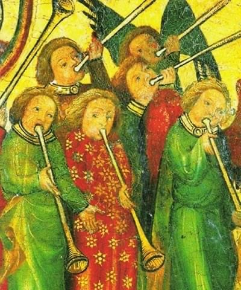

WORKSHOPS
- Maandelijkse studiedag Hildegard von Bingen (halve dag, alleen vrouwen)
- Die Minne mint ende singt: Middeleeuwse Gezongen Liefdespoëzie uit Nederland en Duitsland Datum nader te bepalen, half februari 2026
- Franciscus’ Ode aan de Dieren: Liederen over Schepping en Dierenrijk uit Italiaanse Middeleeuwse en Renaissance Muziek Handschriften Datum nader te bepalen, ergens in oktober 2026
- Een Middeleeuwse Kerst: Middeleeuwse Kerstliederen uit de Nederlanden Op verzoek te boeken in de adventsperiode, vanaf 2 personen
- workshop op maat voor uw koor of een andere context
- Op weg naar Santiago da Compostella: Middeleeuwse Pelgrimsliederen uit voornamelijk Spaanse Muziek Handschriften Datum nader te bepalen, zomer 2026, ook op verzoek boekbaar vanaf 2 personen.
- Hildegard von Bingen: meerdaagse verdieping in de liederen van Hildegard von Bingen vanuit de Dendermonde Codex en de Riesencodex. Datum nader te bepalen, ook op verzoek boekbaar vanaf 4 personen.
- Mastering Modal Methods and Manners for Modal Music: datum nader te bepalen, ook op verzoek boekbaar vanaf 4 personen.
- workshop op maat voor uw ensemble of koor
- Held of antiheld? Een workshop rond het troubadourslied ‘Ja nuns hons pris’ van de 12e eeuwse koning van Engeland, Richard Leeuwenhart, waarin thema’s aan bod komen zoals verbinding, leiden en volgen, balans en ervaren door te doen.
- workshop op maat voor uw bedrijf of organisatie
- Middeleeuwse muziek en notatie: we ontdekken de ontwikkeling van methoden om muziek over te dragen en van de muzieknotatie, in relatie tot de ontwikkelingen in de historie van de muziekstijlen zelf (vanaf groep 3).
- Een middeleeuwse kerst: samen kijken naar de beeldtaal rondom kerst in de middeleeuwen en ervaren hoe die in de teksten en melodieen van middeleeuwse kerstliedjes is verwerkt; over de relatie tussen verbeelding en muziek (vanaf groep 3)
- Het kerelslied: een nieuwe tekst maken voor een heel oud Nederlands lied; over de relatie tussen taal en muziek in de middeleeuwen en nu (vanaf groep 6)
- De keuken van de zangeres: een kijkje in de ‘keuken’ van Marsja Mudde Muziek; over de relatie tussen muziek en andere schoolvakken, zoals taal, rekenen, geschiedenis, filosofie, natuur en techniek, bewegingsonderwijs en zingeving (vanaf groep 3).
- workshop op maat voor uw klas
- workshop op maat voor uw leerkrachten en onderwijsondersteuners
- Het kerelslied: een nieuwe tekst maken voor een heel oud Nederlands lied; over analyse van taal en muziek en de relatie ertussen (voor alle leerjaren en niveaus; ook geschikt bij poezie-onderwijs)
- Rondje Europa: een kennismaking met verschillende middeleeuwse muziekstijlen door heel Europa en hun bijbehorende notaties en uitvoeringspraktijk (gericht op bovenbouwleerlingen die muziek als keuzevak doen)
- workshop op maat voor uw klas
- workshop op maat voor uw docenten en praktijkbegeleiders
-
Die Minne mint ende singt:
Middeleeuwse Gezongen Liefdespoëzie uit Nederland en Duitsland
-
Hildegard Studiedagen Online via International Chant Academy
In samenwerking met de International Chant Academy in de USA verzorgt Marsja online interactieve sessies over de muziek van Hildegard von Bingen.
-
Een Middeleeuwse Kerst:
Middeleeuwse Kerstliederen uit de Nederlanden
Doelgroep:
Liefhebbers van ieder niveau
-
Workshop Franciscus en zijn jubilerende Zonnelied:
Liederen over Sint Franciscus en zijn precies 800 jaar oude Zonnelied uit Italiaanse Middeleeuwse en Renaissance Muziek Handschriften
-
Op weg naar Santiago da Compostella:
Middeleeuwse Pelgrimsliederen uit voornamelijk Spaanse Muziek Handschriften
-
Maandelijkse Studiedag Hildegard von Bingen:
Samen met andere vrouwen zingen en bestuderen van composities van Hildegard von Bingen.
-
Mastering Modal Methods and Manners for Modal Music:
A medium-advanced to advanced course by Center Cantus Modalis. Language of instruction: English.
-
Algemene informatie themaworkshops voor liefhebbers, gevorderden en (pre-)professionals
Onderstaand vindt u de algemene informatie en voorwaarden voor de themaworkshops. De voorwaarden voor workshops voor scholen en bedrijven worden in de offerte verwerkt.
-
Hildegard von Bingen:
Verdieping in de liederen van Hildegard von Bingen vanuit de Dendermonde Codex en de Riesencodex
-
Workshops op maat
Marsja Mudde Muziek verzorgt workshops op maat voor allerlei gelegenheden en doelgroepen.
Workshops
Bij Marsja Mudde Muziek kunt u terecht voor bijzondere workshops rond middeleeuwse en renaissance muziek. Er staan in de agenda meestal meerdere workshops voor zangers en zangeressen die geinteresseerd zijn in dit repertoire. Bij voldoende belangstelling kunnen deze workshops in overleg op andere dagen worden gegeven, of bij voorbeeld speciaal voor uw ensemble of koor. Marsja geeft niet alleen workshops voor mensen die al zingen, maar ook voor scholen, musea en bedrijven. Hierin staat soms het zingen of de muziekgeschiedenis voorop, soms andere thema’s. Op verzoek ontwikkelt Marsja tevens workshops op maat voor allerlei doelgroepen.
Workshops voor zingende liefhebbers vanaf halfgevorderd niveau:
Deze workshops focussen op kennismaking met het repertoire en met vroege notatie. Elke deelnemer wordt op haar of zijn niveau geholpen om het repertoire te kunnen zingen. Meer gevorderden worden individueel verder uitgedaagd. Als groep wordt gewerkt aan de interpretatie. Bij voldoende belangstelling is er een splitsing naar niveau in meer groepen mogelijk.
Workshops voor gevorderden en (pre)professionals:
Bij deze workshops wordt verwacht dat de deelnemers voldoende ervaring hebben om de uitdaging van het volledig lezen uit de originele notatie aan te gaan. Er wordt zowel individueel als in groepjes gewerkt aan het repertoire. De workshop wordt afgesloten met een openbaar toonmoment.
Workshops voor bedrijven, koren, verenigingen, etcetera:
Informeert u vrijblijvend naar de prijzen en voorwaarden van onderstaande workshop of een workshop op maat.
Workshops voor basisscholen:
Deze workshops verbinden muziek aan andere basisschoolvakken. Prijzen en andere voorwaarden zijn afhankelijk van de duur van de workshop en van andere afspraken.
Workshops voor middelbare scholen:
De beschreven workshops zijn geschikt voor een “blokuur” of een dagdeel. De prijzen en andere voorwaarden zijn afhankelijk van de lesduur en andere afspraken.